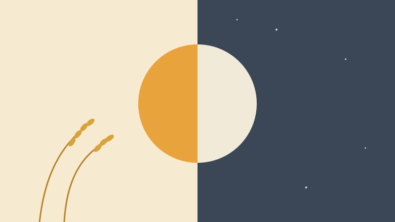

秋分

秋分这一天，太阳直射赤道，全球各地昼夜几乎等长。秋分过后，太阳直射点继续南移，北半球开始昼短夜长，天气也一天比一天凉爽。
秋分日昼夜各约 12 小时
秋分者，阴阳相半也，故昼夜均而寒暑平。—— 西汉 · 董仲舒《春秋繁露》
“分”有两层意思：一是昼夜平分，二是平分了秋季——秋分正好处在立秋和立冬的中间。
从 2018 年起，我国把每年的秋分定为“中国农民丰收节”。这时稻谷金黄、瓜果飘香，正是庆祝丰收、感谢土地的好时候。
秋分习俗
- 庆丰收：各地举办丰收节活动，晒秋、赛农事、品新粮。
- 祭月：古代帝王有“春分祭日、秋分祭月”的礼制，北京的月坛就是祭月的地方。
- 竖蛋：秋分（和春分）有把鸡蛋竖立起来的游戏，传说这天最容易成功。
- 吃秋菜：岭南一些地方在秋分采摘野苋菜，煮成“秋汤”。
秋分的物候
秋分三候为“雷始收声、蛰虫坯户、水始涸”：雷声渐渐消失；小虫开始用细土封堵洞口，准备过冬；降雨减少，河湖的水位开始下降。